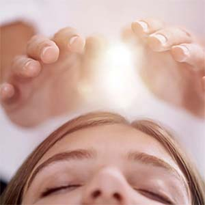

La Terapia Emocional Evolutiva, da energía-conciencia a quién tú realmente eres, abriéndote verdaderamente a recibir los códigos de luz y a crear una realidad más armónica, creativa, amorosa y próspera.
A través de diferentes técnicas, la terapia para niños se enfoca principalmente en el autocontrol de sus emociones, no solo ayudándolos en su concentración si no también en que haya una comprensión y un balance entre la Espiritualidad y el Razonamiento.
Por medio de técnicas de relajación y un trabajo guiado, abrimos nuestra memoria inconsciente, reviviendo hechos anteriores; De esta manera es posible conectar con el origen del problema que nos afecta en el presente.
Esta terapia proporciona una transformación profunda en nuestro ser, ayudándonos a superar miedos, angustias, culpas, fobias, depresiones , etc.
Sabemos que todo en el universo está compuesto de energía, todo es vibración desde lo más sólido hasta lo más etéreo. La radiestesia es justamente el arte de percibir la energía mediante el uso de sencillas herramientas siendo la más frecuente el péndulo.
Las Flores de Bach son una serie de esencias naturales utilizadas para tratar diversas situaciones emocionales, como miedos, soledad, desesperación, estrés, depresión y obsesiones.
Las esencias florales presentan efectos más que positivos en la salud; No solo en adultos, adolescentes y niños, si no también en nuestras amadas mascotas.

Reiki es una palabra sánscrita, deriva de las palabras Rei y Ki. Rei sería el equivalente a la energía universal y Ki la energía vital.
El método Reiki es una técnica de canalización y transmisión de energía vital a través de la imposición de manos. El paciente experimenta paz y equilibrio en todos los niveles.
El método Reiki es apto para ser recibido en todas las edades, incluyendo bebés en etapa de gestación.
Niveles de Equilibrio:
.Físico: mejoría de dolencias, lesiones, metabolismo, etc.
.Emocional: problemas sentimentales, agresividad, infelicidad, etc.
.Mental: hábitos dañinos, estrés, insomnio, etc.
.Espiritual: armonía, paz, equilibrio, etc.
Generalmente las Terapias Alternativas son complementarias a los tratamientos Psicológicos.
Son indicadas por profesionales médicos con la finalidad de complementar a un tratamiento convencional.
Si usted ha comenzado alguna de estas terapias paralelas a su tratamiento regular o tiene intenciones de hacerlo, es recomendable mecionarlo a su médico y/o especialista tratante.